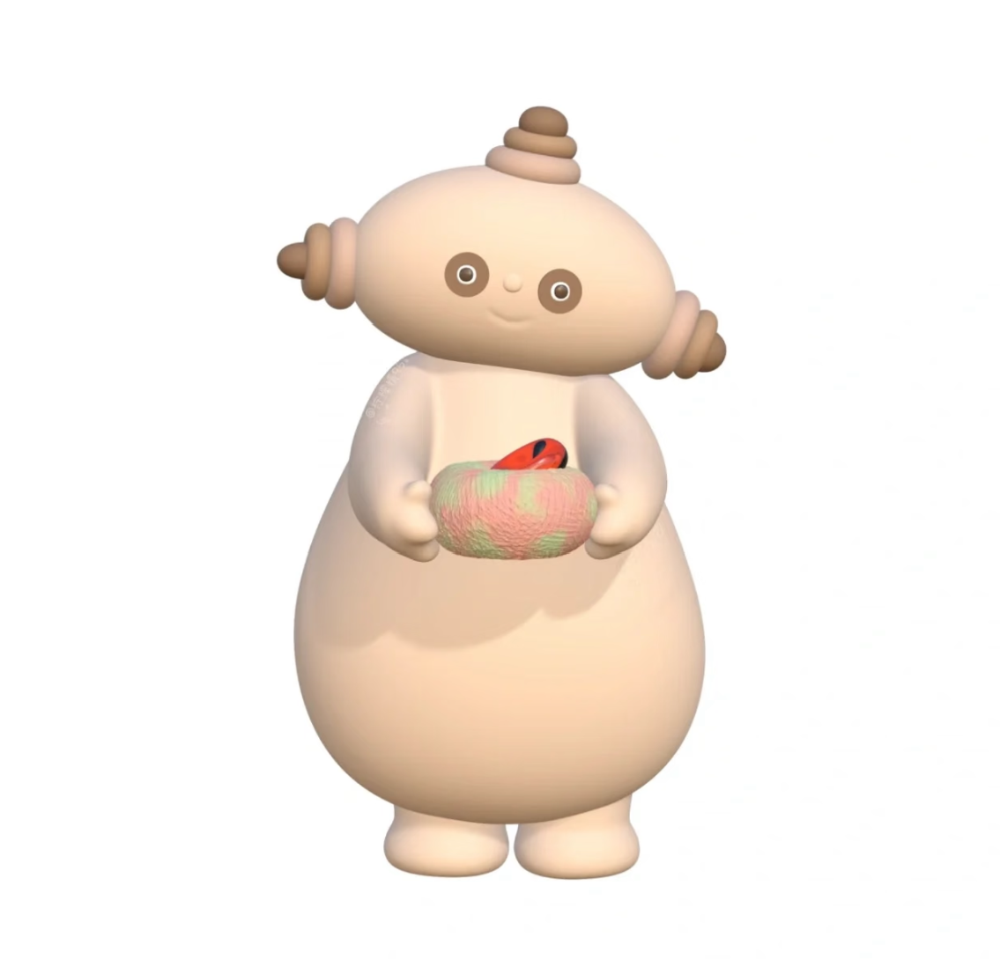

01
About Me
个人介绍
阿卡哇卡！这就是我～

阿卡哇卡！这就是我～一句话版本：一个把「招聘嗅觉」和「AI 工具」缝在一起的人。
👋
嗨，欢迎光临。往下滑，或者点左边的分类直接跳 —— 顺便试试在页面上随便点一下。
（会有小花冒出来）
一个冷知识：我本科学的是环境生态工程，
现在在 AI 公司做技术招聘。
现在在 AI 公司做技术招聘。
听起来八竿子打不着，但拆系统、找变量、看结构这件事其实是一样的 —— 只不过我的研究对象，从生态系统变成了人才生态。
从美团到可灵，再到面壁智能，我一直在 AI 技术团队做招聘：视觉生成、多模态大模型、具身智能、CodeAgent 后训练…… 这些岗位逼着我去搞懂业务到底在找什么样的人，而不是只对着 JD 做关键词匹配。
比起"把活干完"，我更想把它变得省力一点。所以搭了人才 Mapping、简历评分工具和招聘工作台，把踩过的坑变成下次能直接用的经验。
NOW
面壁智能实习+积极求职中
🎞️
生活碎片
左右滑动，看看屏幕之外的我
🎓
EDUCATION
大连理工大学 · 985 / 双一流 · 2023–2027
📚
MAJOR
环境生态工程 · 本科
🎯
DIRECTION
人力资源 / 技术招聘
📍
STATUS
开放实习 / 校招机会
🤖 AI 工具应用
持续关注前沿 AI 产品，能把 AI 工具真正融入实际工作流，有较强的工具探索与落地能力。
🔁 学习迁移能力
具备跨领域快速建立认知框架的能力，能在短时间内把握新领域核心逻辑并高效切入。
🌱 自驱与复盘意识
主动性强，有持续沉淀与迭代个人知识体系的习惯，把经验变成资产。
02
Internship
实习经历米卡玛卡！这些我都干过
三段都在 AI 技术团队，做的是同一件事的上下游：找到人，和把找人的方法沉淀下来。
面壁智能
HR 实习生 · 技术招聘方向
2026.09.09 — 至今
📋 双通道招聘台账
🤝 15+ 社招约面
🎯 10 场 HR 面试
✅ 3 人转化 Offer
1
招聘交付支持多模态、具身方向岗位，与猎头 / 人选协同确认时间、完成 15+ 社招约面，持续跟进面试安排与结果反馈；累计开源并推荐校招实习简历 30+ 份，8 人进入业务面试，独立完成 10 场 HR 面试；与业务侧对齐用人需求与录用决策，后置完成 Offer 沟通与发放，已转化 3 人（2 入职、1 人待入职）。
2
招聘台账与渠道维护自建并维护社招与实习双通道招聘台账，结构化沉淀候选人履历、面试进展与沟通节点；同步维护岗位台账，打通「岗位 — 用人经理 — HC — 在招状态」信息，支撑 10+ 个在招岗位进展实时盘点；对接猎头，同步简历评估进度、面试排期、结果反馈与淘汰原因，保障招聘全流程高效推进。
可灵
HR 实习生 · 技术招聘方向
2026.06 — 2026.08
🏅 28 份实习 Offer
🤝 8 份社招 Offer
🗂️ 50+ 候选人漏斗
🏫 11 所高校 Mapping
1
招聘全链路交付支持可灵评测中心、美学与数据标注部、基础大模型与 Agent 团队的全周期招聘（社招 / 实习 / Kstar 校招三线并行）；通过脉脉、BOSS 直聘、小红书、高校导师主页等渠道定向寻访，独立完成简历初筛、推荐、面试推进与实习生 HR 面。累计发放 28 份实习 Offer、推动 8 份社招 Offer。
2
Kstar 高端校招专项独立跟进 VLM 团队 Kstar 校招全周期，维护 50+ 候选人进度漏斗；对淘汰反馈做系统归因，提炼「技术深度不足」「方向匹配偏差」等核心模式，形成可复用的初筛标准手册反哺后续批次，推动 1 名候选人进入 Offer 沟通阶段。
3
AI 工具赋能提效针对大批量简历初筛效率低、标准参差的痛点，基于 MyFlicker 平台自研简历分析 Skill，构建学历 / 实习经历 / 方向匹配度三维评分模型，把初筛从人工逐份审阅升级为「评分过滤 + 重点复核」模式。
4
高校三级人才 Mapping 建设搭建「高校 — 导师 — 学生」三级 Mapping 体系，系统梳理北大、清华、复旦等 11 所顶尖高校计算机类学院教师主页，通过解析导师主页与公开论文溯源在读硕博信息，沉淀 CV、多模态、NLP 方向潜在实习人才。
美团
HR 实习生 · 技术招聘方向
2026.01 — 2026.05
🔍 133 名开源人才
📨 86 份简历推送
🎯 18 人进入面试
👀 日均 250+ 简历
1
社招交付2—3 月支持信息安全部招聘交付，通过主动寻访与精准筛选，日均浏览 250+ 份在线简历、处理 10+，向业务方推送 2—3 份高质量简历，最终斩获 4 份优质社招 Offer。
2
北斗计划 · 高端人才开源与人才库搭建支持视觉智能、智能交互两个部门 11 个岗位（视觉生成与世界模型、多模态大模型、CodeAgent 后训练等）的招聘交付与人才开源；借助高校导师主页、小红书、顶会期刊与公开数据，用 CatDesk 等 AI 工具识别潜在候选人，搭建结构化技术人才库。开源 133 名优质人选，推送 86 份简历，18 人进入面试，斩获 4 份 Offer。
3
岗位 Mapping 与人才市场调研针对 AI 领域头部竞对公司特定岗位开展人才市场分析；用 AI 辅助生成 Python 爬虫代码高效采集海量岗位信息，借助 GPT、小美助手完成非结构化数据的清洗、提取与归类，输出多维度系统化岗位 Mapping 报告。
03
Project
项目经历呣！这个是我自己搭的
实习期间信息散落在多个平台，人才数据和复盘都留不下来 —— 于是我自己搭了个底座。
招聘工作台搭建
自主探索搭建个人招聘知识底座，基于 WorkBuddy 自建招聘工作台，集成六大核心模块，实现信息获取、人才储备与过程沉淀一体化，支撑日常招聘效率持续提升。
大模型知识库LLM Knowledge Base
行业动态自动推送Industry Feed
高校三级人才 MappingTalent Mapping
秋招岗位聚合Campus Jobs
竞对图谱维护Competitor Graph
个人复盘沉淀Retrospective
04
Campus
校园经历阿卡！这些是支教的照片
两次支教，从队员到队长 —— 认真教书，也用镜头记下孩子们的笑脸。
05
Hobbies
兴趣爱好米卡～这些都是我的快乐源泉
摄影、手帐、旅行、看书 —— 输入之外，我给自己的四格充电口。
📷摄影
喜欢用镜头收集春天 —— 花的枝、墙上的光、傍晚的风。
查看 3 张 →
📔手帐
把日子贴进本子里，也做成立体页 —— 大海、星球，和慢慢写下的字。
查看 3 张 →
✈️旅行
去没去过的地方走走 —— 成都的站台、上海的外滩、云南的雪山，都是脚下的路。
查看 3 张 →
📖看书
最近在读余秋雨的《文化苦旅》—— 山水之间藏着历史的重量。
看 4 句摘抄 →